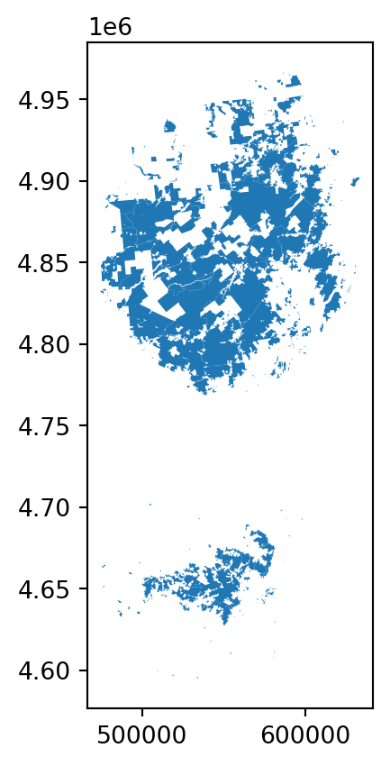
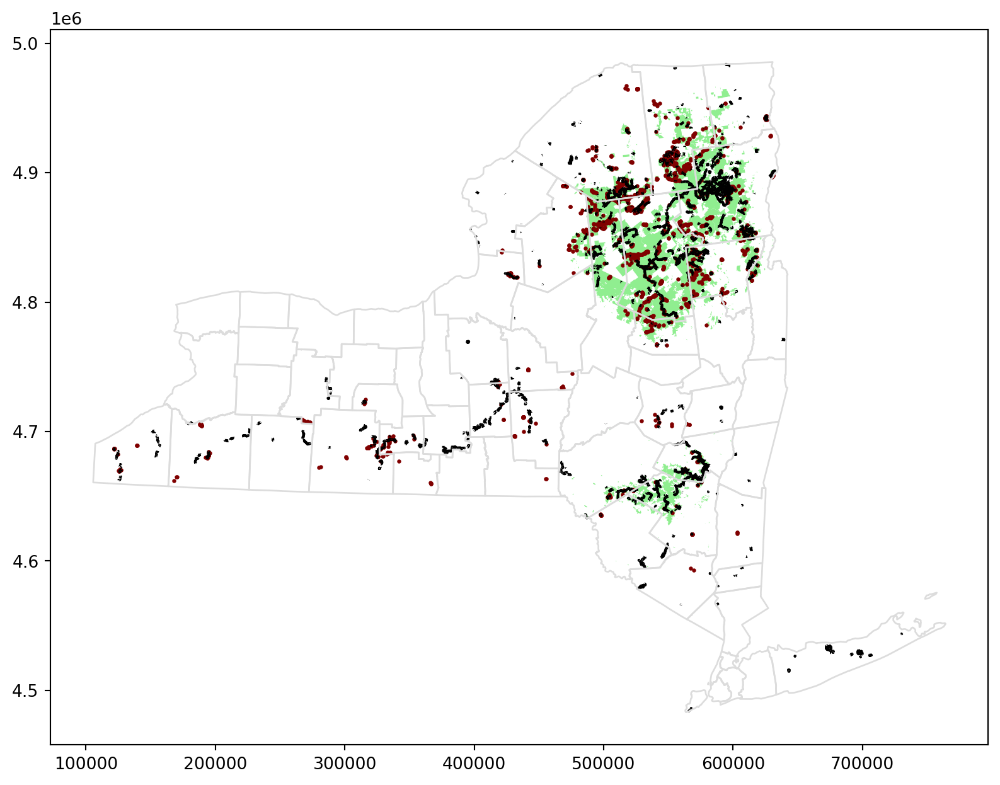

micro-course에서 지리 공간 데이터 또는 지리적 위치가 있는 데이터를 랭글링하고 시각화하는 다양한 방법에 대해 알아봅니다.
그 과정에서 다음과 같은 몇 가지 실제 문제에 대한 솔루션을 제공하게 됩니다: - 글로벌 비영리 단체가 필리핀의 외딴 지역에서 활동 범위를 넓히려면 어디로 가야 할까요? - 멸종 위기 조류인 보라색 담비는 북미와 남미를 어떻게 이동하나요? - 새들이 보호 지역으로 이동하는가? - 일본의 어느 지역이 추가 내진 보강의 혜택을 받을 수 있을까요? - 캘리포니아의 어느 스타벅스 매장이 다음 스타벅스 리저브 로스터리 매장으로 유력한 후보지인가요? - 뉴욕시에는 자동차 충돌 사고에 대응할 수 있는 충분한 병원이 있나요? 뉴욕시에서 의료 서비스 제공에 공백이 있는 지역은 어디일까요?
또한 보스턴시의 범죄를 시각화하고, 가나의 의료 시설을 조사하고, 유럽의 최고 대학을 탐색하고, 미국의 독성 화학물질 방출을 추적할 수 있습니다.
이 첫 번째 튜토리얼에서는 이 마이크로 강좌를 완료하는 데 필요한 전제 조건을 빠르게 다룹니다. 더 깊이 있는 복습을 원하신다면 판다스 마이크로 코스를 추천합니다.
또한 첫 번째 지리공간 데이터 집합을 시각화해 보겠습니다.
Reading data
첫 번째 단계는 지리 공간 데이터를 읽어오는 것입니다! 이를 위해 GeoPandas 라이브러리를 사용하겠습니다.
import geopandas as gpd
C:\Users\heeyoung\.conda\envs\quarto\lib\site-packages\geopandas\_compat.py:123: UserWarning: The Shapely GEOS version (3.10.1-CAPI-1.16.0) is incompatible with the GEOS version PyGEOS was compiled with (3.10.4-CAPI-1.16.2). Conversions between both will be slow.
warnings.warn(
shapefile, GeoJSON, KML, GPKG 등 다양한 지리공간 파일 형식이 있습니다. 이 마이크로 강좌에서는 그 차이점에 대해서는 다루지 않겠지만, 중요합니다:
shapefile은 가장 흔한 파일 유형입니다.
이러한 모든 파일 유형은 gpd.read_file() 함수를 사용하여 빠르게 로드할 수 있습니다. 다음 코드 셀은 뉴욕주 환경보전국에서 관리하는 숲, 야생지대 및 기타 토지에 대한 정보가 포함된 shapefile을 로드합니다.
# Read in the datafull_data = gpd.read_file("geopandas_data/DEC_lands/DEC_lands/DEC_lands.shp")# View the first five rows of the datafull_data.head()
OBJECTID
CATEGORY
UNIT
FACILITY
CLASS
UMP
DESCRIPTIO
REGION
COUNTY
URL
SOURCE
UPDATE_
OFFICE
ACRES
LANDS_UID
GREENCERT
SHAPE_AREA
SHAPE_LEN
geometry
0
1
FOR PRES DET PAR
CFP
HANCOCK FP DETACHED PARCEL
WILD FOREST
None
DELAWARE COUNTY DETACHED PARCEL
4
DELAWARE
http://www.dec.ny.gov/
DELAWARE RPP
5/12
STAMFORD
738.620192
103
N
2.990365e+06
7927.662385
POLYGON ((486093.245 4635308.586, 486787.235 4...
1
2
FOR PRES DET PAR
CFP
HANCOCK FP DETACHED PARCEL
WILD FOREST
None
DELAWARE COUNTY DETACHED PARCEL
4
DELAWARE
http://www.dec.ny.gov/
DELAWARE RPP
5/12
STAMFORD
282.553140
1218
N
1.143940e+06
4776.375600
POLYGON ((491931.514 4637416.256, 491305.424 4...
2
3
FOR PRES DET PAR
CFP
HANCOCK FP DETACHED PARCEL
WILD FOREST
None
DELAWARE COUNTY DETACHED PARCEL
4
DELAWARE
http://www.dec.ny.gov/
DELAWARE RPP
5/12
STAMFORD
234.291262
1780
N
9.485476e+05
5783.070364
POLYGON ((486000.287 4635834.453, 485007.550 4...
3
4
FOR PRES DET PAR
CFP
GREENE COUNTY FP DETACHED PARCEL
WILD FOREST
None
None
4
GREENE
http://www.dec.ny.gov/
GREENE RPP
5/12
STAMFORD
450.106464
2060
N
1.822293e+06
7021.644833
POLYGON ((541716.775 4675243.268, 541217.579 4...
4
6
FOREST PRESERVE
AFP
SARANAC LAKES WILD FOREST
WILD FOREST
SARANAC LAKES
None
5
ESSEX
http://www.dec.ny.gov/lands/22593.html
DECRP, ESSEX RPP
12/96
RAY BROOK
69.702387
1517
N
2.821959e+05
2663.909932
POLYGON ((583896.043 4909643.187, 583891.200 4...
“CLASS” 열에서 볼 수 있듯이 처음 5개의 행은 각각 다른 forest에 해당합니다.
이 튜토리얼의 나머지 부분에서는 이 데이터를 사용하여 주말 캠핑 여행을 계획하는 시나리오를 생각해 보겠습니다. 온라인에서 크라우드 소싱된 리뷰에 의존하는 대신 자신만의 지도를 만들기로 결정합니다. 이렇게 하면 특정 관심사에 맞게 여행을 조정할 수 있습니다.
Prerequisites
데이터의 처음 다섯 행을 보기 위해 head() 메서드를 사용했습니다. 이 메서드는 판다스 데이터프레임을 미리 볼 때에도 사용한다는 것을 기억하실 것입니다. 사실, 데이터프레임에 사용할 수 있는 모든 명령은 데이터와 함께 작동합니다!
데이터가 (판다스) 데이터프레임의 모든 기능을 갖춘 (GeoPandas) GeoDataFrame 객체에 로드되었기 때문입니다.
type(full_data)
geopandas.geodataframe.GeoDataFrame
예를 들어 모든 열을 사용하지 않으려는 경우 열의 하위 집합을 선택할 수 있습니다. (데이터를 선택하는 다른 방법을 검토하려면 Pandas micro-course 강좌의 튜토리얼을 확인하세요.)
data = full_data.loc[:, ["CLASS", "COUNTY", "geometry"]].copy()
value_counts() 메서드를 사용하여 다양한 토지 유형 목록과 해당 유형이 데이터 집합에 나타나는 횟수를 확인합니다.
# How many lands of each type are there?data.CLASS.value_counts()
CLASS
WILD FOREST 965
INTENSIVE USE 108
PRIMITIVE 60
WILDERNESS 52
ADMINISTRATIVE 17
UNCLASSIFIED 7
HISTORIC 5
PRIMITIVE BICYCLE CORRIDOR 4
CANOE AREA 1
Name: count, dtype: int64
loc(혹은iloc) 및 isin을 사용하여 데이터의 하위 집합을 선택할 수도 있습니다.
# Select lands that fall under the "WILD FOREST" or "WILDERNESS" categorywild_lands = data.loc[data.CLASS.isin(['WILD FOREST', 'WILDERNESS'])].copy()wild_lands.head()
CLASS
COUNTY
geometry
0
WILD FOREST
DELAWARE
POLYGON ((486093.245 4635308.586, 486787.235 4...
1
WILD FOREST
DELAWARE
POLYGON ((491931.514 4637416.256, 491305.424 4...
2
WILD FOREST
DELAWARE
POLYGON ((486000.287 4635834.453, 485007.550 4...
3
WILD FOREST
GREENE
POLYGON ((541716.775 4675243.268, 541217.579 4...
4
WILD FOREST
ESSEX
POLYGON ((583896.043 4909643.187, 583891.200 4...
위의 명령어에 익숙하지 않은 경우, 이 페이지를 북마크에 추가하여 필요에 따라 명령을 찾아볼 수 있도록 하는 것이 좋습니다. 이 micro-course에서는 맵을 만들기 전에 데이터를 이해하고 필터링하기 위해 이러한 명령을 사용할 것입니다.
Create your first map!
Plot() 메서드를 사용하여 데이터를 빠르게 시각화할 수 있습니다.
wild_lands.plot()
<Axes: >

모든 GeoDataFrame에는 특별한 “geometry” 열이 포함되어 있습니다. 이 열에는 plot() 메서드를 호출할 때 표시되는 모든 기하학적 개체가 포함됩니다.
# View the first five entries in the "geometry" columnwild_lands.geometry.head()
이 열에는 다양한 데이터 유형이 포함될 수 있지만 각 항목은 일반적으로 Point, LineString, 또는 Polygon 입니다.
데이터 집합의 ‘geometry’ 열에는 2983개의 서로 다른 Polygon 개체가 포함되어 있으며, 각 개체는 위 플롯에서 서로 다른 모양에 해당합니다.
아래 코드 셀에서는 캠프장 위치(Point), 도보 트레일(LineString), 카운티 경계(Polygon)를 포함하는 세 개의 GeoDataFrames를 더 만듭니다.
# Campsites in New York state (Point)POI_data = gpd.read_file("geopandas_data/DEC_pointsinterest/DEC_pointsinterest/Decptsofinterest.shp")campsites = POI_data.loc[POI_data.ASSET=='PRIMITIVE CAMPSITE'].copy()# Foot trails in New York state (LineString)roads_trails = gpd.read_file("geopandas_data/DEC_roadstrails/DEC_roadstrails/Decroadstrails.shp")trails = roads_trails.loc[roads_trails.ASSET=='FOOT TRAIL'].copy()# County boundaries in New York state (Polygon)counties = gpd.read_file("geopandas_data/NY_county_boundaries/NY_county_boundaries/NY_county_boundaries.shp")
다음으로, 네 개의 GeoDataFrames 모두에서 맵을 만듭니다.
plot() 메서드는 모양을 사용자 지정하는 데 사용할 수 있는 몇 가지 매개 변수를 (선택 사항) 입력으로 받습니다. 가장 중요한 것은 ax 값을 설정하면 모든 정보가 동일한 맵에 그려진다는 것입니다.
# Define a base map with county boundariesax = counties.plot(figsize=(10,10), color='none', edgecolor='gainsboro', zorder=3)# Add wild lands, campsites, and foot trails to the base mapwild_lands.plot(color='lightgreen', ax=ax)campsites.plot(color='maroon', markersize=2, ax=ax)trails.plot(color='black', markersize=1, ax=ax)
<Axes: >

주 북동부 지역은 캠핑 여행에 좋은 옵션이 될 것 같습니다!
Your turn
처음에는 복잡하게 느껴지겠지만, 이미 중요한 분석을 수행할 수 있을 만큼 충분히 배웠을 것입니다. 비영리 단체가 사업을 확장할 수 있는 필리핀의 외딴 지역을 직접 찾아보세요.
Exercise
introduction
Kiva.org는 전 세계 빈곤층에게 금융 서비스를 제공하는 온라인 크라우드펀딩 플랫폼입니다.
Kiva의 대출자들은 200만 명 이상의 사람들에게 10억 달러 이상의 대출을 제공했습니다.
Kiva는 전 세계 ‘현장 파트너’ 네트워크를 통해 전 세계에서 가장 외진 곳까지 도달합니다. 이러한 파트너는 지역사회에서 대출자를 심사하고, 서비스를 제공하며, 대출을 관리하는 현지 단체입니다.
이 연습에서는 필리핀의 Kiva 대출을 조사하게 됩니다. 새로운 현장 파트너를 모집할 기회를 찾기 위해 현재 Kiva의 네트워크 밖에 있을 수 있는 지역을 파악할 수 있나요?
시작하려면 아래 코드 셀을 실행하여 피드백 시스템을 설정하세요.
import geopandas as gpd
1) Get the data.
다음 셀을 사용하여 loans_filepath에 있는 shapefile을 로드하여 GeoDataFrame world_loans를 만듭니다.
loans_filepath ="./geopandas_data/kiva_loans/kiva_loans/kiva_loans.shp"# Your code here: Load the dataworld_loans = gpd.read_file(loans_filepath)# Check your answer#q_1.check()# Uncomment to view the first five rows of the dataworld_loans.head()
Partner ID
Field Part
sector
Loan Theme
country
amount
geometry
0
9
KREDIT Microfinance Institution
General Financial Inclusion
Higher Education
Cambodia
450
POINT (102.89751 13.66726)
1
9
KREDIT Microfinance Institution
General Financial Inclusion
Vulnerable Populations
Cambodia
20275
POINT (102.98962 13.02870)
2
9
KREDIT Microfinance Institution
General Financial Inclusion
Higher Education
Cambodia
9150
POINT (102.98962 13.02870)
3
9
KREDIT Microfinance Institution
General Financial Inclusion
Vulnerable Populations
Cambodia
604950
POINT (105.31312 12.09829)
4
9
KREDIT Microfinance Institution
General Financial Inclusion
Sanitation
Cambodia
275
POINT (105.31312 12.09829)
2) Plot the data.
다음 코드 셀을 변경하지 않고 실행하여 국가 경계가 포함된 GeoDataFrame world를 로드합니다.
# This dataset is provided in GeoPandasworld_filepath = gpd.datasets.get_path('naturalearth_lowres')world = gpd.read_file(world_filepath)world.head()
pop_est
continent
name
iso_a3
gdp_md_est
geometry
0
889953.0
Oceania
Fiji
FJI
5496
MULTIPOLYGON (((180.00000 -16.06713, 180.00000...
1
58005463.0
Africa
Tanzania
TZA
63177
POLYGON ((33.90371 -0.95000, 34.07262 -1.05982...
2
603253.0
Africa
W. Sahara
ESH
907
POLYGON ((-8.66559 27.65643, -8.66512 27.58948...
3
37589262.0
North America
Canada
CAN
1736425
MULTIPOLYGON (((-122.84000 49.00000, -122.9742...
4
328239523.0
North America
United States of America
USA
21433226
MULTIPOLYGON (((-122.84000 49.00000, -120.0000...
world 및 world_loans 지오데이터프레임을 사용하여 전 세계의 Kiva 대출 위치를 시각화합니다.